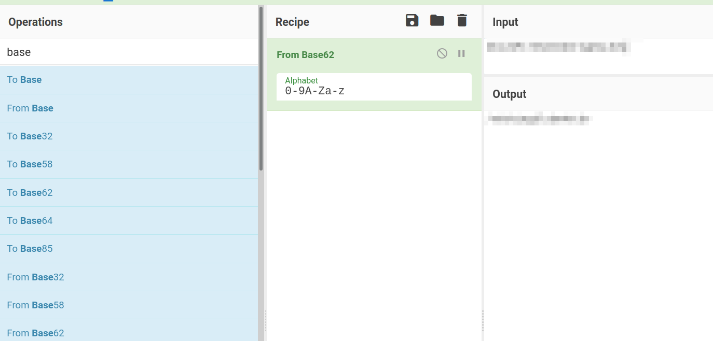

To keep it spoiler-free, all important information to solve the ctf is either pixelated or encoded with ROT-13.
Overview
The room starts with a rather easy nmap and directory enumeration. I've chosen ffuf instead of gobuster because ffuf has the ability to check all subfolders, up to a defined depth, automatically. There are a nginx server on a standard port 80 and another apache webserver on a non-standard port, as well as an ssh server on a non-standard port. After identifying all the folders on both web servers, all the robots.txtand and index.html files are checked, source included and some encoded strings are found. One of the string is a sha256-like hash but it's not really sha256. After finding the correct cryptographic function it reveals a secret folder. In the secret folder a picture inside a picture is found and with some steganography tools and a password we cracked earlier, an username and a binary representation of a string is found. Converting the binary string we get the password and we can log in via ssh as that user. We get the user flag and with the hint we convert the rotated string to the correct flag. Using linpeas.sh we find a cronjob running as root. Editing the file the cronjob runs and adding a reverse shell, we get root and finally the root flag.
User-Agent:*
Disallow:/
Robots Not Allowed
User-Agent:a18672860d0510e5ab6699730763b250
Allow:/
This Flag Can Enter But Only This Flag No More Exceptions
12345678
<divclass="main_page"><divclass="page_header floating_element"><imgsrc="/icons/openlogo-75.png"alt="Debian Logo"class="floating_element"/><spanclass="floating_element">
Apache 2 It Works For Me
<phidden>its encoded with ba....:ObsJmP173N2X6dOrAgEAL0Vu</p></span></div>
1234567
<li>
They are activated by symlinking available
configuration files from their respective
Fl4g 3 : flag{9fdafbd64c47471a8f54cd3fc64cd312}
*-available/ counterparts. These should be managed
by using our helpers
<tt>
Trying to crack it with the downloadable easypeasy.txt isn't succesfull so we have to try and hope an online tool has the hash in it's database.
Another way could be to simply paste the string in the google searchbar but that would result in write-ups as well and we don't want that for now. So we search google with decrypt md5 hash
The index.html is seemingly a default apache page but with two entries that are not included in a standard default apache page.
The first entry is flag3 and we can find it in clear sight on the page.
The second entry is hidden in the source code:
its encoded with ba....:BofWzC173A2K6qBeNtRNY0Ih
The hiny is that it's encoded in "ba". It could be some base64 or similar encoding. The easiest way to check that out is with cyberchef.
We try base64 but the output makes no sense. So we try the other base(n) encodings until we get an output that makes sense, in this case base62

The result looks like a folder and adding it to the IP:PORT in the browser we can confirm it's a new, hidden folder
string in index.html in folder /n0th1ng3ls3m4tt3r
In the source of index.html in the newly discovered folder /n0th1ng3ls3m4tt3r we find the string 940d71e8655ac41efb5f8ab850668505b86dd64186a66e57d1483e7f5fe6fd81
hash-identifier says it's probably sha256
123456
--------------------------------------------------
HASH: 940d71e8655ac41efb5f8ab850668505b86dd64186a66e57d1483e7f5fe6fd81
Possible Hashs:
[+] SHA-256
[+] Haval-256
But hash-identifier was wrong here. It's GOST, a Russian cryptography function
We could have used the hint as well and crack it with the format gost
123456789
└─# john --wordlist=easy.txt --format=gost hash.txt 1 ⨯
Using default input encoding: UTF-8
Loaded 1 password hash (gost, GOST R 34.11-94 [64/64])
Will run 2 OpenMP threads
Press 'q' or Ctrl-C to abort, almost any other key for status
mypasswordforthatjob (?)
1g 0:00:00:00 DONE (2021-11-30 20:34) 33.33g/s 136533p/s 136533c/s 136533C/s mypasswordforthatjob..flash88
Use the "--show" option to display all of the cracked passwords reliably
Session completed.
Or, now that we now the function, gost, we can use hashcat as well
Now we have a password, but still no username. We try root as the only know user but no way in.
Since the room has a tag that says steganography, let's try steghide
After trying steghide on the picture matrix-3109795_960_720.jpg I've downloaded from the css portion of the page and after I went over the index.html again, I realized there is a picture in the picture and maybe I was trying to crack the wrong picture. After an hour of trying steghide and stegcracker and compiling the new, ultra fast stegseek (recommendation) , everything went smoothly with the right picture binarycodepixabay.jpg
The password is the decoded gost hash mypasswordforthatjob. You can crack the password with the easypeasy.txt and the ultra fast (whole rockyou.txt in 4-5 seconds) stegseek password list as well
123456
└─# stegseek binarycodepixabay.jpg easy.txt 1 ⨯
StegSeek 0.6 - https://github.com/RickdeJager/StegSeek
[i] Found passphrase: "mypasswordforthatjob"
[i] Original filename: "secrettext.txt".
[i] Extracting to "binarycodepixabay.jpg.out".
It's obvious it's binary, with cyberchef it should be easy to get it decoded
With the username boring and the password iconvertedmypasswordtobinary and not forgetting the non-standard port ssh is using, we can log in.
1 2 3 4 5 6 7 8 910111213
└─# ssh boring@10.10.42.67 -p 6498 255 ⨯
*************************************************************************
** This connection are monitored by government offical **
** Please disconnect if you are not authorized **
** A lawsuit will be filed against you if the law is not followed **
*************************************************************************
boring@10.10.42.67's password:
You Have 1 Minute Before AC-130 Starts Firing
XXXXXXXXXXXXXXXXXXXXXXXXXXXXXXXXXXXXXXXXXXXXXXXXX
!!!!!!!!!!!!!!!!!!I WARN YOU !!!!!!!!!!!!!!!!!!!!
You Have 1 Minute Before AC-130 Starts Firing
XXXXXXXXXXXXXXXXXXXXXXXXXXXXXXXXXXXXXXXXXXXXXXXXX
!!!!!!!!!!!!!!!!!!I WARN YOU !!!!!!!!!!!!!!!!!!!!
123
boring@kral4-PC:~$ cat user.txt
User Flag But It Seems Wrong Like It`s Rotated Or Something
synt{a0jvgf33zfa0ez4y}
Some rotating is mentioned so first think to think about is some kind of caesar cipher or rot13
Using cyberchef again we get the flag
After we have the user flag we can look at privilege escalation. sudo -lcrontab -l give us nothing so let's try with linpeas.sh
On the attacker machine we go to a folder with linpeas.sh in it and in that folder we start a simple http server withpython or php.
12
bonzo@srv001:/opt/share/scripts/linpeas> python3 -m http.server
Serving HTTP on 0.0.0.0 port 8000 (http://0.0.0.0:8000/) ...
On the victim machine we go to a folder that's writable (/temp) and get the leanpeas.sh with wget from the attacker machine and make it executable.
Changing to that folder and checking the files with ls -al we see that the user boring (we) has full read/write. That means we can change the contents of the file and create a reverse shell. Since the user that runs the shell script through anacron is root we'll get a root shell.
The initial content of .mysecretcronjob.sh
1234
boring@kral4-PC:/var/www$ cat .mysecretcronjob.sh
#!/bin/bash
# i will run as root
boring@kral4-PC:/var/www$
We can look for reverse shell at https://github.com/swisskyrepo/PayloadsAllTheThings/blob/master/Methodology%20and%20Resources/Reverse%20Shell%20Cheatsheet.md#bash-tcp
We try a bash reverse shell first because it's a stable shell and it very often works. If it won't work I usually try a netcat shell. That one always worked for me.
First bash reverse shell was unstable, second was stable but only a simple shell. We can get the root flag anyway. The machine had python3 installed so I could span a bash shell so I could see more. Changing the folder to /root/ and listing the files, I found the .root.txt (the .means it is hidden so you need the -l option to show all files)
Any feedback and suggestions are welcome. This website was created using mkdocs and the material plugin. If you
want, you can make a pull request. The repository is https://github.com/dabonzo/itsec_hp